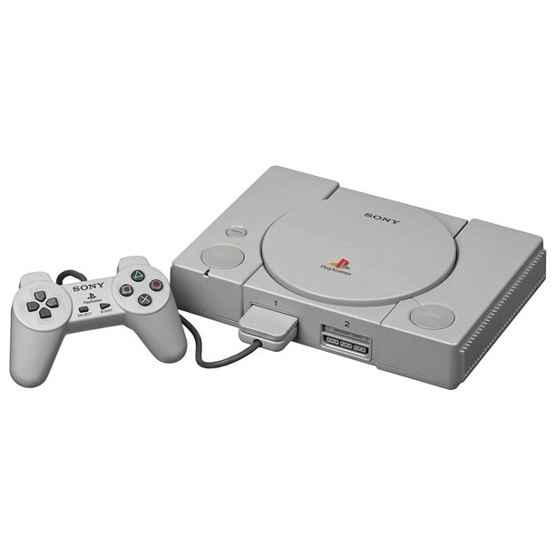

PlayStation

The PlayStation (abbreviated as PS, commonly known as the PS1 or its codename PSX) is a home video game console developed and marketed by Sony Computer Entertainment. It was released on 3 December 1994 in Japan, 9 September 1995 in North America, 29 September 1995 in Europe, and 15 November 1995 in Australia. As a fifth-generation console, the PlayStation primarily contended with the Nintendo 64 and the Sega Saturn. Sony began developing the PlayStation after a failed venture with Nintendo to create a CD-ROM peripheral for the Super Nintendo Entertainment System in the early 1990s. The console was primarily designed by Ken Kutaragi and Sony Computer Entertainment in Japan, while additional development was outsourced in the United Kingdom. An emphasis on 3D polygon graphics was placed at the forefront of the console's design. PlayStation game production was designed to be streamlined and inclusive, enticing the support of many third-party developers.
The PlayStation (abbreviated as PS, commonly known as the PS1 or its codename PSX) is a home video game console developed and marketed by Sony Computer Entertainment. It was released on 3 December 1994 in Japan, 9 September 1995 in North America, 29 September 1995 in Europe, and 15 November 1995 in Australia. As a fifth-generation console, the PlayStation primarily contended with the Nintendo 64 and the Sega Saturn. Sony began developing the PlayStation after a failed venture with Nintendo to create a CD-ROM peripheral for the Super Nintendo Entertainment System in the early 1990s. The console was primarily designed by Ken Kutaragi and Sony Computer Entertainment in Japan, while additional development was outsourced in the United Kingdom. An emphasis on 3D polygon graphics was placed at the forefront of the console's design. PlayStation game production was designed to be streamlined and inclusive, enticing the support of many third-party developers.